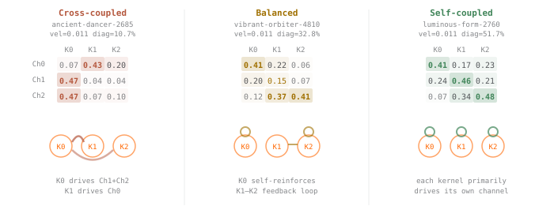

Fiber Theory
We use Flow Lenia to study the relation between rules and forms: choose rule parameters and a starting field, run the system, measure the form, then ask how the resulting morphology space bends, loops, and overlaps with 859 EmbryoMaker morphology snapshots and 232 Dryad fish landmark configurations.
1. The Map
The object is the genotype-to-phenotype projection. A genotype is a Flow Lenia rule parameterization. A phenotype is the measured shape and trajectory after simulation. For a fixed initialization and observation protocol, we call the parameterizations that land near the same measured form its approximate fiber.

2. Topology
On the full Lenia cloud, the 4,096-landmark run finds 4,930 H1 intervals, with top persistence 2.78. On the no-food 8,192 cohort, exact dense TDA finds 7,275 H1 intervals, with top persistence 0.80.
The EmbryoMaker morphology snapshots have 297 exact H1 intervals with top persistence 0.29. The Dryad fish landmark cohort has 66 exact H1 intervals with top persistence 0.64. The interval counts are sample-size dependent; the comparable fact is that the same descriptor layer sees loop structure in all three clouds.

3. Transport
A neighborhood selected without fish data lies closer to the fish landmark cohort under the shared shape measurements: its median nearest-fish distance is 3.30, compared with 5.90 across the broad Lenia sample. The resemblance is in twelve measurements, not necessarily in visible anatomy.
The transport test asks a separate question. When we follow nearby measured forms around a loop, does the generating rule return too? The broad screen found 109 of 4,802 groups that passed both closure measures at three scales. Stricter dense checks retained only one of five selected broad-corpus candidates and none of five candidates from the fish-near region. The apparent rule-return differences therefore need further testing; the fish-near region has no surviving joint witness among the candidates checked. Read the controls and dense checks.

4. Interfaces and Arrangement
The polynomial-functor split is still useful. Kernels behave like interfaces: they sense neighborhood densities and contribute responses. The channel-weight matrix is arrangement: it wires those interfaces together.
